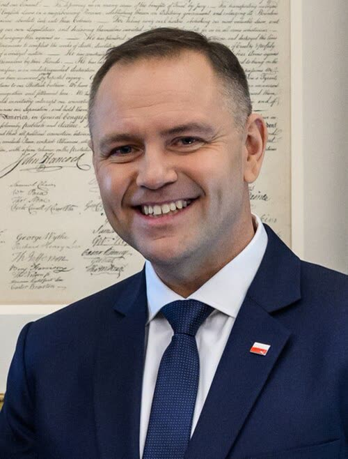

Polonia, Nawrocki mette il veto ai blocchi online decisi da un ufficio
A nostro avviso il presidente ha ragione sul principio, il giudice prima di bloccare un'opinione, ma il veto in blocco lascia senza strumenti anche la parte sui minori.
Redazione Contrappunto · aggiornato il 13.11.2026

_(cropped).jpg){kind=link}
Il Digital Services Act (DSA) è il regolamento europeo che obbliga le grandi piattaforme (social, motori di ricerca, negozi online) a rimuovere i contenuti illegali e a spiegare le loro decisioni; ma non dice cosa è illegale né quale ufficio nazionale possa ordinare i blocchi: lo decide ogni paese con una legge. In Polonia il governo di Donald Tusk ne ha presentate due. La prima, che indica nel presidente dell'Ufficio per le comunicazioni elettroniche (UKE) il coordinatore nazionale, è in vigore dal 6 novembre. La seconda, sul blocco dei contenuti illegali, il Sejm (la Camera bassa) l'ha approvata l'8 ottobre, dopo una serie di attacchi con il coltello nelle scuole. Oggi, 13 novembre, il presidente della Repubblica Karol Nawrocki, vi ha posto il veto, come già a gennaio con la prima versione. È una delle sette leggi su cui ha deciso oggi: sei le ha firmate.
Vedi di più: 5 parole spiegate, cosa si racconta
Cosa si raccontaNawrocki dice che la legge dà al governo un «controllo arbitrario» su cosa si può scrivere e che a decidere se un contenuto è reato deve essere un giudice, non un funzionario. Il governo (Tusk, il vicepremier Gawkowski, il viceministro Standerski) risponde che la legge colpisce solo reati del Codice penale, che c'è il ricorso al giudice e che senza di essa mancano gli strumenti contro i contenuti sui minori. Niezalezna (destra, vicina al PiS) la chiama «cenzorska» e ne elenca i punti più pesanti; Rzeczpospolita (centro-destra) e Interia (centro) riportano le due parti; TVN24 e OKO.press (centro-sinistra) riportano le parole di Nawrocki e la replica del ministero. Do Rzeczy e il sito della presidenza non si sono potuti leggere. [Niezalezna.pl] [Rzeczpospolita] [Interia] [TVN24] [OKO.press]
- Veto e 3/5
- Il presidente può rinviare una legge al Sejm invece di firmarla. Per approvarla di nuovo contro di lui servono i 3/5 dei voti (money.pl)
- UKE e KRRiT
- L'Urząd Komunikacji Elektronicznej è l'autorità polacca delle comunicazioni (come da noi l'Agcom); la KRRiT, il Consiglio nazionale della radiotelevisione, ne ha la competenza per le piattaforme di video come YouTube o TikTok (OKO.press).
- Blocco amministrativo
- Un ufficio dello Stato, e non un giudice, ordina di togliere un contenuto; il giudice interviene solo se l'interessato fa ricorso. L'opposto è il blocco su ordine preventivo del giudice.
- Tribunale costituzionale
- La corte che in Polonia giudica la conformità delle leggi alla Costituzione. Il presidente può mandarvi una legge invece di porre il veto; Nawrocki dice di non averlo fatto perché «dziś Trybunału nie ma» (oggi il Tribunale non c'è), per la crisi di cui abbiamo scritto il 12 novembre.
- Niezalezna, Rzeczpospolita, Interia, TVN24, OKO.press
- Niezalezna: portale di destra vicino al PiS. Rzeczpospolita: quotidiano conservatore-liberale. Interia: grande portale di notizie. TVN24: rete all-news privata, liberale. OKO.press: testata d'inchiesta di centro-sinistra.
- Il 13 novembre Nawrocki ha posto il veto alla seconda legge che attua il DSA, quella sul blocco dei contenuti illegali: dice che un funzionario non può decidere se un contenuto è reato (TVN24, OKO.press, Interia).
- Secondo la legge, a bloccare sarebbero stati il presidente dell'UKE o, per le piattaforme video, quello della KRRiT; l'interessato avrebbe potuto fare ricorso a un giudice entro 14 giorni, e per i materiali sui minori il blocco sarebbe stato subito esecutivo (OKO.press, Interia). Sui reati d'odio le testate non dicono la stessa cosa.
- Il governo ha annunciato una nuova legge. Per respingere il veto servono i 3/5 del Sejm: l'8 ottobre i sì sono stati 242, con 136 astenuti, di cui 133 del PiS (Interia, Rzeczpospolita).
Niezalezna (destra) chiama la legge «cenzorska»: a bloccare sarebbe stato un ufficio, non un giudice. TVN24 e OKO.press (centro-sinistra) riportano le parole di Nawrocki e la replica del governo, che ricorda i minori da proteggere e il ricorso al giudice; Rzeczpospolita (centro-destra) e Interia (centro) fanno la cronaca delle due parti. Sul punto decisivo, chi decide sui reati d'odio, le testate non dicono lo stesso. A nostro avviso: per i materiali sui minori un blocco immediato con il giudice subito dopo; per le opinioni il giudice prima, e niente blocco dell'intero sito. [3] [2] [1] [4] [5]
La verifica punto per punto4 passaggi, 7 fonti
Qui sotto ogni cosa scritta sopra, una per una, con le fonti. Confermato: lo dice un documento originale o più fonti lette. Plausibile: lo riportano fonti serie, ma non abbiamo letto l'originale. Discordante: le fonti danno numeri diversi, e diciamo quali. Ipotesi e Opinione sono il nostro ragionamento, separato dai fatti.
Cosa prevedeva la legge e perché è stata respinta
La legge introduceva il blocco amministrativo dell'accesso ai contenuti illegali: potevano chiederlo procura, polizia, fisco, titolari di diritti d'autore e utenti; decideva il presidente dell'UKE o, per le piattaforme video, quello della KRRiT, entro un termine da 2 a 21 giorni, con ricorso a un giudice ordinario entro 14 giorni. Se non fosse possibile bloccare il singolo contenuto, l'UKE poteva iscrivere l'intero dominio in un registro e gli operatori avrebbero dovuto bloccarlo entro 48 ore (OKO.press). Nawrocki dice: «Rolą urzędnika nie jest ferowanie wyroków o tym, czy dana treść była przestępstwem czy nie» (il compito di un funzionario non è emettere sentenze su se un contenuto sia reato) e «Wróciło widmo urzędnika cenzora»; aggiunge che il governo ha usato gli attacchi nelle scuole («Wykorzystano tragedię»), che lo Stato ha già gli strumenti contro i contenuti terroristici (regolamento UE 2021/784, un'ora per la rimozione) e che nella fase finale al Senato le competenze dei funzionari sono state di nuovo ampliate (TVN24). Dice anche che di norma la legge andrebbe al Tribunale costituzionale, «ma dziś Trybunału nie ma» (TVN24). Il governo risponde: per il viceministro Standerski la legge «nie tworzy żadnych uznaniowych mechanizmów ani nowej cenzury» e colpisce reati del Codice penale; i blocchi più urgenti, sui minori, sarebbero stati subito eseguibili (OKO.press). Tusk ha scritto su X «A jednak zawetował» e Gawkowski ha parlato di «Czarny dzień dla bezpieczeństwa Polek i Polaków w internecie»; Gawkowski ha annunciato un nuovo testo (Rzeczpospolita). Il 13 novembre Nawrocki ha firmato altre sei leggi (Interia).
Chi decide cosa è illegale e quando entra il giudice
Per OKO.press decide l'UKE o la KRRiT e il giudice interviene solo su ricorso entro 14 giorni. Per Interia l'UKE decide di regola, ma per l'incitamento all'odio razziale o religioso serve un ordine del giudice; per Standerski, fuori dai casi sui minori, deciderebbe un tribunale indipendente (OKO.press). Per Niezalezna invece anche per i reati d'odio (articoli 119, 256 e 257 del Codice penale) deciderebbe l'UKE, prima che un giudice esamini il contesto. Per TVN24 gli ordini non verrebbero eseguiti automaticamente prima che un giudice possa verificarli; per Standerski e Interia, quelli sui minori sì. Le versioni non si conciliano sul testo che non abbiamo letto: la legge andrebbe letta articolo per articolo, per le parti sull'odio e sull'esecuzione.
I numeri per superare il veto
Per respingere il veto servono i 3/5 dei voti del Sejm (money.pl). L'8 ottobre la legge ebbe 242 sì, 61 no (Konfederacja, Konfederacja Korony Polskiej, gran parte di Rozwój Plus) e 136 astenuti, tra cui 133 del PiS (Interia): su 439 votanti i 3/5 sarebbero 264 (calcolo nostro), 22 più dei sì. Il testo è poi passato dal Senato e il voto finale del Sejm non l'abbiamo letto. Il deputato PiS Grzegorz Macko ha definito il veto «Dobra decyzja Prezydenta» e ha chiesto come voterà il suo gruppo sul veto (Rzeczpospolita). Il 5 dicembre 2025 sulla legge sulle cripto, con 435 votanti, i 3/5 erano 261 e la coalizione ne ebbe 243 (money.pl). Nelle fonti lette non c'è una data per un voto sul veto.
Il nostro punto
La versione più forte delle ragioni di Tusk è questa: secondo TVN24 la Polonia è l'unico paese UE senza un coordinatore con i poteri richiesti e rischia sanzioni della Corte di giustizia UE, e per i materiali sui minori un blocco che aspetta il giudice arriva troppo tardi. È vero, e per quel caso l'esecuzione immediata con ricorso dopo è difendibile. Ma a nostro avviso Nawrocki ha ragione su tutto il resto: quando si decide cosa si può scrivere, un giudice deve venire prima, non dopo; l'iscrizione dell'intero sito in un registro sottratto all'accesso del pubblico, con 48 ore per bloccarlo, è sproporzionata; e «apolitico» sulla base di un'autodichiarazione, come scrive Niezalezna, non è una garanzia. Il veto in blocco però lascia senza strumenti anche la parte più urgente, e a giudicare dal voto dell'8 ottobre il governo non ha i numeri per scavalcarlo. Quindi: un testo ridotto, con il blocco immediato solo per i minori, il giudice prima per tutto il resto, niente blocco di interi domini e un registro pubblico. E la presidenza, se vuole essere creduta, indichi lei le modifiche su cui firmerebbe.
Fonti7, tutte con il link
- Prezydent zawetował ustawę o blokowaniu nielegalnych treści w internecie (13 novembre 2026, archivio d0f02d0104f48) (OKO.press) · consultata il 13.11.2026
- Prezydent zawetował ustawę o bezpieczeństwie w internecie (13 novembre 2026, archivio dd7f2f3c7d48f) (TVN24) · consultata il 13.11.2026
- Ustawa cenzorska do kosza. Prezydent Nawrocki zawetował akt DSA (13 novembre 2026, archivio d954edd53fa47) (Niezalezna.pl) · consultata il 13.11.2026
- Nielegalne treści miały znikać z internetu szybciej. Nawrocki zawetował przepisy (13 novembre 2026, archivio d32a4e3db2186; pagina a pagamento, testo visibile) (Rzeczpospolita) · consultata il 13.11.2026
- Karol Nawrocki podjął decyzję. Chodzi o blokowanie nielegalnych treści w sieci (13 novembre 2026, archivio d7b500938bf41) (Interia) · consultata il 13.11.2026
- Sejm reaguje na serię ataków w szkołach. Ustawa przegłosowana. Jak głosowały kluby? (8 ottobre 2026, archivio de434f90a5f40) (Interia) · consultata il 13.11.2026
- Weto Nawrockiego ws. kryptowalut. Sejm zagłosował (5 dicembre 2025, archivio dd07d19624306) (money.pl) · consultata il 13.11.2026
Testo preparato con strumenti di intelligenza artificiale e pubblicato senza revisione umana. Come lavoriamo